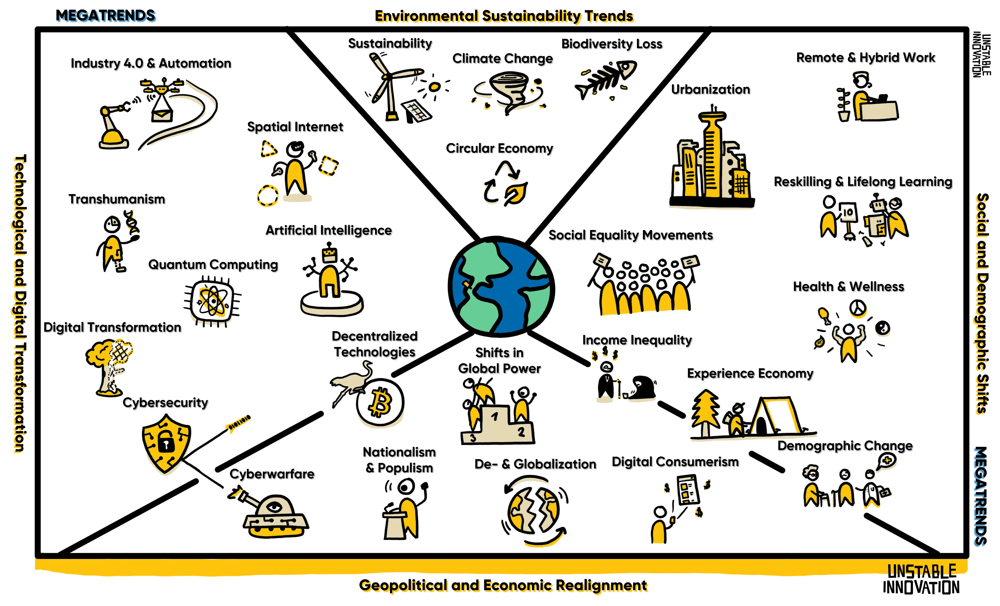

The four megatrends shaping the next decade. Originally framed in Unstable Innovation and updated annually.

Four categories encapsulate the forces transforming every aspect of our private and business world. They overlap, compound, and reshape each other — but seeing them clearly is the first step to navigating what comes next.
Technology is reshaping the world faster than ever, simultaneously affecting all other social, environmental, and economic megatrends. AI and automation are the main forces of change and will continue compounding and accelerating in the foreseeable future. These technologies promise to revolutionize our views on everything in ways we are just beginning to understand.
AI is taking over the internet and has already transformed entire industries by automating complex decision-making, analyzing vast datasets, and optimizing operations. From healthcare to finance, virtually every industry is experiencing AI increase efficiency while reshaping — and sometimes replacing — human roles in the workplace.
Factories full of robots, fleets of autonomous terrestrial, airborne, and nautical vehicles, machines communicating with machines — all of it is automation. It enables machines to take over repetitive and labor-intensive tasks, improving productivity for physical work.
The shift from non-digital to digital operations has become a survival requirement. Every serious company must adopt the ways of the digital era — tools, cloud computing, AI — or face pressure from more efficient competitors.
As more business and personal data moves online, cyberattacks are growing exponentially in frequency and sophistication. Security has become an essential focus for governments, enterprises, and individuals alike. Friendly reminder: keep your software up to date.
Quantum technology holds the potential to solve problems far beyond classical computers. Still emerging, it promises breakthroughs in cryptography, material science, and drug discovery — anywhere processing extremely large numbers matters.
Blockchain enables decentralized solutions that eliminate intermediaries: Bitcoin as an alternative to the current monetary system, NOSTR as a substitute for corporate-owned social media. Decentralized tech is pushing the boundaries of how value and information are exchanged.
As gen-tech and wearable technology grow more powerful and cheaper, transhumanism gains momentum. Genetic engineering, brain-computer interfaces, and bionics envision a future where technology can radically augment what it means to be human — challenging our understanding of life, ethics, and human potential.
Augmented and virtual reality merge the physical and digital worlds, allowing real-time interaction with digital environments. With new protocols like HSTP, this could become the next era of the internet — reshaping gaming, healthcare, education, and retail through immersive 3D experiences.
Environmental concerns are at the top of global agendas, with businesses and governments under pressure to implement sustainable practices within the next decades. We are polluting our planet and need to push toward reducing carbon footprints, waste, and resource consumption. The urgent need to combat climate change and protect biodiversity will demand that companies increasingly align their strategies with environmental goals.
Our impact on the world is increasingly evident and disruptive, pushing businesses, governments, and societies toward greater sustainability. Reducing emissions and transitioning to cleaner energy sources are critical steps in mitigating further damage.
As we operate in an economy that requires unlimited growth, our limited resources become scarcer. Sustainability is increasingly becoming a core part of how institutions brand themselves — green energy, waste reduction, sustainable sourcing — to meet both regulatory and market demands.
Reduce waste and reuse resources: recycling, repairing, repurposing. The idea is to minimize environmental impact by designing products for longevity and resource efficiency.
The destruction of ecosystems and rapid loss of biodiversity poses serious risks to our planet's resilient yet fragile bio-balance. Protecting biodiversity is essential for maintaining the ecological balance that underpins food security, clean air, and water.
The world's political and economic orders fluctuate as countries try to predict rapid change with their political strategies. Power is shifting toward emerging economies. Globalization is being reevaluated as countries balance cooperation with protectionism. Digital consumerism and growing income inequality reshape the global economic landscape.
Driven by the internet, globalization continues to shape international trade. But protectionism and nationalist policies are prompting countries to focus on self-reliance, reshaping supply chains and global business strategies.
Economic inequality widens within and between countries, leading to political instability. Social media amplifies the struggles most people face, increasing pressure on governments and corporations to address wealth inequality.
The rise of China, India, and other emerging economies is challenging traditional Western dominance — particularly the US Dollar as the global reserve currency. The result is a more multipolar world order and increasing social uncertainty.
Rising nationalist and populist movements challenge global cooperation on issues like climate, trade, and migration. These movements prioritize local concerns over international collaboration.
Cyberattacks are increasingly tools of geopolitical conflict, targeting critical infrastructure and shaping public opinion. Nations are investing heavily in offensive and defensive cyber capabilities.
Consumers shift spending from material goods to memorable experiences — travel, events, entertainment. Industries adapt with personalization, safety, and increasingly hybrid or fully-digital experiential offerings.
E-commerce, scroll shopping, and mobile payments are reshaping consumer behavior. Companies compete in the attention economy and must innovate to keep pace with consumer demand for seamless, engaging, personalized digital experiences.
The megatrends are the context; the chapters of Unstable Innovation are how to act inside that context.
3 · Social and demographic shifts
Societies are undergoing profound changes accelerated by tech advances and global economy. Populations age, learning goes online, cities grow, new work cultures rise, health becomes more prominent, and social movements reshape norms and expectations.
Demographic Change
Birth rates fall and life expectancy rises in developed countries. Aging populations create new challenges for healthcare, pensions, and labor markets. Industries must adapt to elderly care demand and a shrinking workforce; countries must adjust financial plans to pension pressure.
Social Equality Movements
Social media accelerates the distribution of information, giving activists for socioeconomic, racial, and gender equality more reach. Companies increasingly prioritize diversity and inclusion in their strategies; social justice has become both a moral requirement and a factor in customer loyalty and brand reputation.
Urbanization
More than half the world's population now lives in cities, seeking better job opportunities. This drives demand for smart-city solutions, infrastructure development, and sustainable housing.
Health and Wellness
Alarming health trends — often tied to what we consume — drive growing focus on mental and physical wellbeing. Corporate wellness programs and consumer demand for healthier products are both expanding.
Remote and Hybrid Work
COVID-19 fast-tracked remote and hybrid models. Employees now value the freedom to choose their place of work. This challenges companies to rethink offices and team dynamics, and fuels the growth of the gig economy.
Reskilling and Lifelong Learning
Formal education becomes partially obsolete by graduation; automation and AI disrupt traditional industries at an accelerating pace. Lifelong learning becomes essential — individuals and organizations are investing heavily in upskilling and reskilling.